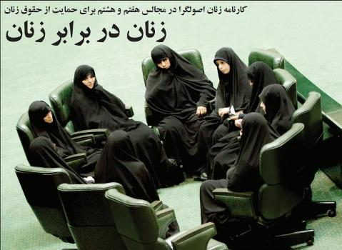

پذيرش > اخبار > زنان در برابر زنان/ رد طرح تابعیت ایرانی برای فرزندان حاصل از ازدواج زنان ایرانی با (...)


 زنان در برابر زنان/ رد طرح تابعیت ایرانی برای فرزندان حاصل از ازدواج زنان ایرانی با مردان خارجی زنان در برابر زنان/ رد طرح تابعیت ایرانی برای فرزندان حاصل از ازدواج زنان ایرانی با مردان خارجی
13 شهریور 1390 - - نسخه قابل چاپ
روزنامه روزگار: گاهی زنان به هزار دلیل نانوشته در برابر زنان قرار میگیرند و گاهی هم پیگیری مسائل زنان در مجلس به بازتولید همان رویکردهای مردسالارانه پیشین منجر میشود. گاهی سکوت و مفعول بودن و گوش به حرف مردان سپردن تکلیف و مرام زنان به اصطلاح حاضر در قدرت میشود و مسائل زنان مانند همیشه در حاشیه میماند.
کارنامه زنان اصولگرا به ویژه زنان حاضر در مجالس هفتم و هشتم نشان میدهد هیچ تلاشی برای حمایت از حقوق زنان در جامعه صورت نگرفته و از طرحی مانند لایحه حمایت خانواده تنها به عنوان بازیچهای برای وقتگذرانی نمایندگان و رسانهای شدن ازدواج موقت و متعدد استفاده شده است و البته جسته و گریخته دیدگاههایی درباره مسائل زنان مطرح میشود. مانند سخنان روز گذشته لاله افتخاری از نمایندگان مجلس هشتم که تاکید کرده بود: «امروز چادر مشکی از بحث هستهای برای ما مهمتر است.» دبیر جامعه زینب نیز در همین زمینه تاکید میکند مجلس هشتم اصولاً به مسائل زنان نپرداخته است.
از ناکارآمدی زنان اصولگرای حاضر در مجلس که بگذریم به طرحی امیدبخش میرسیم که از اواخر مجلس هفتم مورد تاکید قرار گرفت. تصویب یک فوریت طرح ایرانی محسوب شدن فرزندان حاصل از ازدواج زنان ایرانی با مردان خارجی کورسوی امیدی بود برای فعالیت زنان مجلس در راستای حمایت از حقوق زنان که خبر رسید به دلایل مسائل امنیتی و اطلاعاتی اصلاح این قانون در کمیسیون قضایی مجلس رد شده است.
نخستین مخالفت با این طرح نیز توسط نیره اخوانبیطرف از اعضای کمیسیون قضایی و حقوقی مجلس صورت گرفت و بعدها صف مخالفت آقایان نیز به رد این طرح متصل شد.
نمره زنان اصولگرای مجالس هفتم و هشتم، نمره پایینی است. به نمره قبولی هم نمیرسد و احتمال رفوزگیشان بالاست.
مریم بهروزی دبیر جامعه زینب(س) تاکید میکند: حضور زنان در مجلس به حضوری نمایشی، تزیینی و دکوری تبدیل شده و متاسفانه زنان مجلس هیچ تلاشی برای تغییر وضعیت زنان جامعه انجام ندادهاند. زنان تنها برای خالی نبودن عریضه وارد مجلس شدهاند و گروههای سیاسی نیز به دلیل سوءاستفاده از رای زنان تلاش دارند از ورود زنانی به مجلس حمایت کنند که بعدها نظر مستقلی از خود نداشته و تابع باشند.
او درباره رد طرح تابعیت ایرانی برای فرزندان حاصل از ازدواج زنان ایرانی با مردان خارجی اظهار تاسف کرده و آن را نقطه ضعف بزرگی برای زنان مجلس میداند که نتوانستهاند دغدغه زن ایرانی برای انتقال تابعیت خود به فرزندش را در نهادی که قرار است رای و حقوق مردم در آن لحاظ شود، توجیه و تبیین کنند. زن ایرانی به اعتقاد او با توجه به رشد اجتماعی و تحصیلاتی که داشته باید بتواند از حقوق بالاتری برخوردار باشد و زنان مجلس این مهم را نادیده گرفتهاند چرا که اغلب از خود ایدهای ندارند.
بهروزی در ادامه میگوید: «باید زنانی توانمند در کمیسیونهای مختلف مجلس حضور داشته و مسائل روز زن ایرانی را پیگیری کرده و توان اقناع و بررسی داشته باشند، نه اینکه در تصویب آرا نگاهشان به دیگران بوده و از خود استقلال رایی نداشته باشند.»
مجلس هشتم اگرچه بارها وعده داده بود تا بیمه زنان سرپرست خانوار را اجرایی کند اما تاکنون در این زمینه راه به جایی نبرده و تنها تبلیغات سیاسی در آستانه انتخابات گهگاه چاشنی اخبار رسانههای اصولگرا میشود.
در همین حال الهه کولایی استاد دانشگاه و از زنان نماینده حاضر در مجلس ششم نیز به کاهش توجه به مسائل زنان در مجالس اصولگرا اشاره کرده و میافزاید: «با اینکه اولویت خواستههای زنان هر روز تغییر کرده و اساسیتر میشود، مجلسیان از درک و شناخت مشکلات زنان جامعه درماندهاند و زنان مجلس متاسفانه در رایگیریها اغلب به طرحهایی رای میدهند که خلاف حقوق زنان است. متاسفانه تقلیل بودجه زنان در مجلس هفتم تا یکسوم میزان گذشته آن اتفاق افتاد. در دولت اصلاحات ردیفی برای بودجه مشارکت امور زنان در ریاستجمهوری در نظر گرفته شده بود و بر این اساس دفاتر امور زنان میتوانستند از این بودجه استفاده کنند اما عملکرد مجلس هفتم هزینه سنگینی را بر زنان ایرانی بار کرد که تاثیر آن امروز بر سیاستگذاریهای حوزه زنان قابل مشاهده است.»
کولایی درباره عملکرد زنان حاضر در مجلس ششم میگوید: «پشتوانه کار کارشناسی در مجلس ششم، ارتباط با وکلا، حقوقدانان و قضات بود و بر این اساس توانست ظرفیتی را برای پاسخگویی در جامعه فراهم کند. اما متاسفانه شاهد بودیم در دو دوره مجلس هیچ اقدام اصولی برای رفع مسائل زنان صورت نگرفته است.»
تنها عملکرد مجلس هفتم کنار گذاشتن و رد الحاق به کنوانسیون رفع اشکال تبعیض علیه زنان بود. این در حالی است که در مجلس ششم این کنواسیون با دو شرط عدم مغایرت با شرع و عدم ارائه دعاوی از سوی جمهوری اسلامی پذیرفته و به مجامع بینالمللی ارائه شد. از سوی دیگر زنان مجلس هشتم در یک موضعگیری تبلیغاتی دیگر به حذف موادی از لایحه حمایت از خانواده اشاره کردند که در واقع هیچ نقطه عطفی برای زنان ایرانی دربر نداشته و تنها به مثابه درجا زدن در همان حقوق تبعیضآمیز گذشته به شمار میآید.
ارسال به
بالاترین
،
توییتر
،
فریندفید
،
فیسبوک
در همين بخش :
 پروین ذبیحی برنده جایزه حقوق بشری سازمان غيردولتى اتريشى سودويند شد پروین ذبیحی برنده جایزه حقوق بشری سازمان غيردولتى اتريشى سودويند شد
پخش کارت پستال و بروشور در روز جهانی زن در تهران
تمدید زمان برای امضای بیانیهی جمعی از فعالان زن به مناسبت هشت مارس
مجوزی که در نطفه خفه شد
بیش از 2000 امضا در اعتراض به تبعیض های آموزشی به مجلس تحویل داده شد
ديگر بخش ها :
طرح یک میلیون امضا
|
مقالات
|
سایت نوشته ها
|
اخبار
|
گزارش كمپين
|
گفت و گو
|
علیه سکوت
|
كوچه به كوچه
|
نامه های شما
|
گزارش ویژه
|
گفتگو با اعضا
|
ویژه سالگرد کمپین
|
تصویر برابری
|
دل آرام علی
|
تریبون
|
مقالات
|
تاریخ شفاهی
|
خارج از چارچوب
|
کتابخانه
|
درباره کمپین
|
کمپین در شهرها
|
کمپین در بند
|
صدای تغییر
|
ویژه 22 خرداد
|
لایحه حمایت از خانواده
|
گالری
|
عشا مومنی
|
امیر یعقوبعلی
|
خدیجه مقدم
|
راحله عسگری زاده و نسیم خسروی
|
پروین اردلان،جلوه جواهری، مریم حسین خواه، ناهید کشاورز
|
زینب پیغمبرزاده
|
سعیده امین، سارا ایمانیان، محبوبه حسین زاده، ناهید کشاورز و همایون نامی
|
احترام شادفر
|
نسیم سرابندی زاده،فاطمه دهدشتی
|
وبلاگ مهمان
|
پرونده خرم آباد
|
دستگیری ها
|
مریم مالک
|
پرستو اللهیاری
|
مهرنوش اعتمادی
|
سمیه رشیدی
|
Other Languages
|
همراهان
|
«فراخوان کمپین ده روز با بهاره هدایت»
| English
|